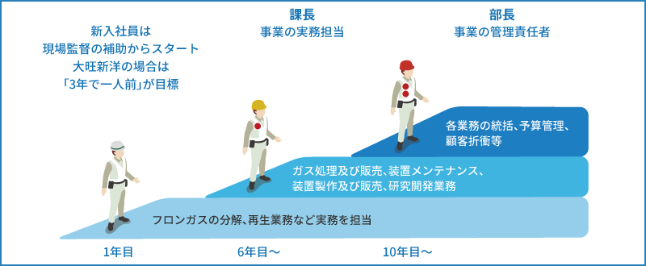

環境事業の特徴
【環境事業部ホームページ： http://gasu-syori.com/ 】
環境事業では主にフロンの分解・再生、特殊ガスの処理装置の開発、生産、販売するメーカーとしての事業と、フロン、特殊ガスの分解・再生などの処理事業を行っています。フロンは地球温暖化、オゾン層破壊の原因となる物質で、事業を通して地球温暖化防止や環境問題に取り組んでいます。
環境事業の拠点となる環境エンジニアリング本部社屋です。フロン破壊装置、再生装置が並んでいます。
フロン破壊処理の操作を行っています。新人は、まずはフロンの処理方法から学びます。
炎の色でフロン処理の状態をチェックします。目で見て判断する経験が必要な作業です。
装置のメンテナンスを行います。メーカーとしての重要な作業です。
大旺新洋はフロンの処理装置のメーカーでもあります。処理業を通して培ったノウハウを開発に活かせるところが強みです。
事業の成長のためには技術開発が不可欠です。産官学連携で、新しい方式を研究し開発につなげます。
フロン処理装置の開発と、処理業の両方をやっているのは業界でも大旺新洋だけです。処理現場と開発が隣り合わせで日々作業を行っているので、ノウハウ、技術、トラブルへの知見を日々蓄積できるところが強みです。
環境事業の仕事
フロンの分解・再生、特殊ガスの処理を自分たちで行います。処理だけでなく、機械の組み立てや修理も環境事業部で行います。幅広い知識が必要になる事業です。
オゾン層を破壊するフロン、温室効果が非常に高い代替フロン。過熱蒸気反応法という方法でフロンを無害化します。
機械から抜いたフロンから水や油などの不純物を除き、フロンだけのきれいな状態にして再利用します。
フロン分解時に出た廃棄物は「脱水ケーキ」とよばれます。従来はリサイクルできなかったケーキも、新しい装置では肥料などにして有効利用することができます。
フロン処理を行うだけでなく、処理機器を開発するメーカーでもある環境事業部。幅広い知識を活用し、よりよい機器の開発を目指しています。
分解と再生、両方の側面を追求することで、より社会に貢献したいと考えています。大学との共同研究も行い、技術力を磨いています。
社会貢献の側面が強い環境事業。自分たちの仕事が未来の地球を守っている、そんな意識で仕事にあたっています。
環境事業の現場
環境事業ではガス処理業務と装置開発業務を行います。フロンの分解装置、再生装置を運転しガス処理を行いますが、多くの操作がありますので習熟が必要です。

装置開発現場、装置製作現場、装置メンテナンス現場、フロンガス処理現場など、活動する場は多岐にわたります。処理業で積み上げた知見を装置開発に活かし、その装置でさらに処理業の生産性を高めるというサイクルを回せることは、弊社だけが持つ強みです。